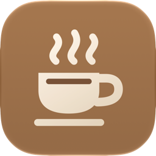
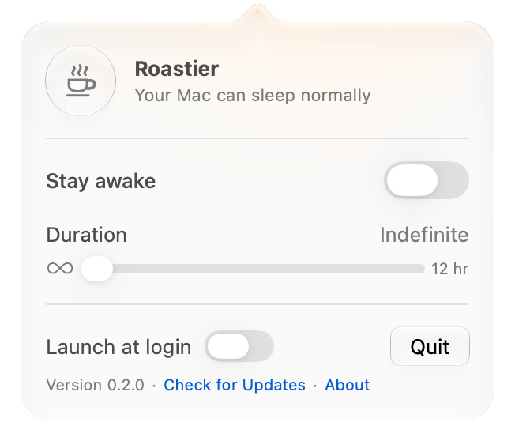
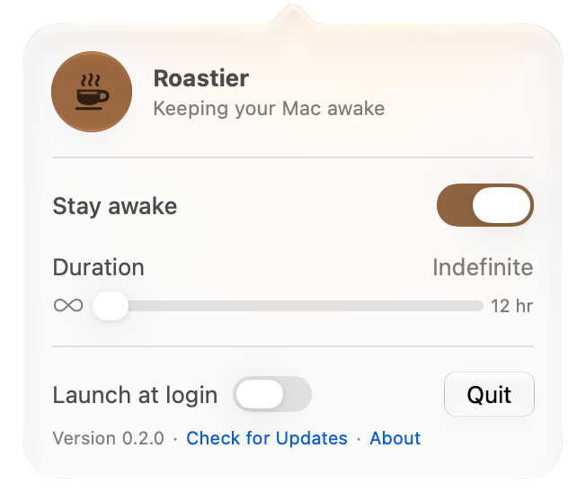
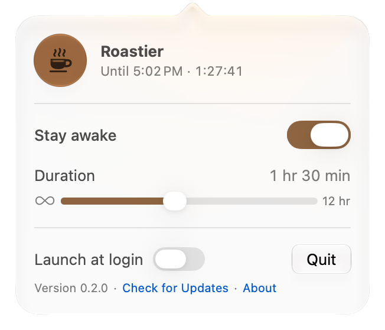

Roastier
Keep your Mac awake from the menu bar. Switch it on until you're done, or for exactly as long as you need.


Keep your Mac awake from the menu bar. Switch it on until you're done, or for exactly as long as you need.

Stay awake
Switch on Stay awake with the slider at infinity, and your Mac keeps its display on and skips sleep until you switch it off. The cup in your menu bar fills while it's on.

Timer
Slide from 5 minutes to 12 hours, in 5-minute steps for the first hour. The slider counts down as the time passes, and your Mac goes back to sleeping normally when it ends.

Turn it on once, and the cup is waiting in your menu bar every time you sign in.
New versions download in the background, and a session picks up again after the restart.
A SwiftUI app with a Liquid Glass popover, and no Dock icon or windows to manage.
Under the hood
caffeinate -dims
While it's on, Roastier holds the same power assertions as macOS's own
caffeinate command, and releases them the moment it turns off.
| Flag | Assertion | Stops |
|---|---|---|
-d |
PreventUserIdleDisplaySleep |
The display sleeping when you're idle |
-i |
PreventUserIdleSystemSleep |
Your Mac sleeping when you're idle |
-m |
PreventDiskIdle |
Disks idling to save power |
-s |
PreventSystemSleep |
System sleep, while on AC power |